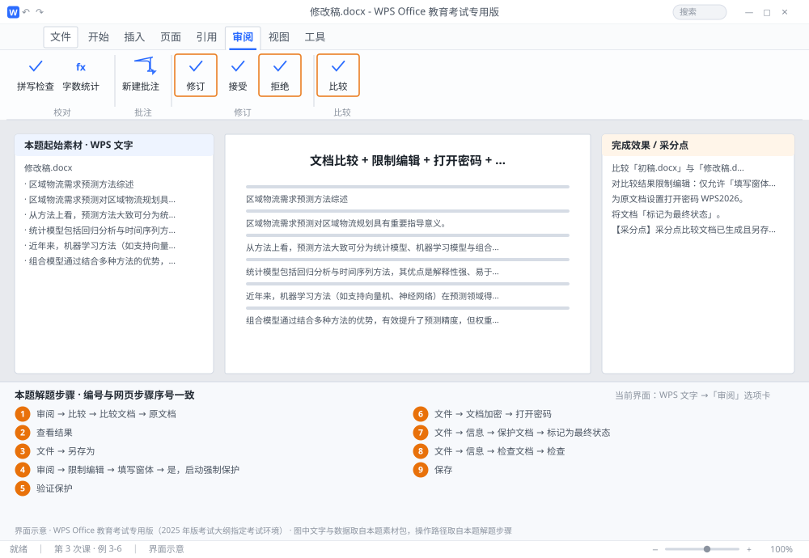

完成比对文档 · 例 3-6
文档比较 + 限制编辑 + 打开密码 + 标记最终状态 + 检查文档 ｜ 第 3 次课 / WPS 文字 ｜ 网页：实操-文字3.html ｜ 考试环境：WPS Office 教育考试专用版（2025 年版考试大纲指定考试环境）
用途 本页按修订后的题目要求与解题步骤生成，是交卷自查的结果基准：
逐项列出每一步应出现的可复核结果，配合模拟操作截图与解题结果文件使用。
它不是素材包的一部分，不会预置答案动作；起始素材仍从本题素材包下载。
一、本题起始素材包
目录：练习素材/练习3-6-文档比较与保护/ ｜
下载包：练习素材/下载/练习3-6-文档比较与保护.zip
二、题目要求
- 比较「初稿.docx」与「修改稿.docx」，生成比较文档，另存为 比较结果.docx。
- 对比较结果限制编辑：仅允许「填写窗体」，启动强制保护（不设密码）。
- 为原文档设置打开密码 WPS2026。
- 将文档「标记为最终状态」。
- 执行「检查文档」，删除文档属性与个人信息。
- 保存为 学号-姓名-练习3-6.docx。
三、解题步骤（编号与下方核对表、截图编号一致）
- 比较文档。「审阅」→「比较」→「比较文档」→「原文档」选初稿.docx、「修订的文档」选修改稿.docx → 确定。
- 查看结果。新窗口会显示三栏（原文档/修改稿/比较结果），差异以修订形式标出。
- 另存。在比较结果窗口 →「文件」→「另存为」→ 比较结果.docx。
- 限制编辑。「审阅」→「限制编辑」→ 勾选「仅允许在文档中进行此类型的编辑」→ 下拉选「填写窗体」→ 点「是，启动强制保护」→ 不输密码直接确定。
- 验证保护。尝试在正文里输入文字，应被拒绝或弹出提示。
- 设打开密码。回到原文档 →「文件」→「文档加密」→「打开密码」输入 WPS2026 两次 → 确定 → 保存。
- 标记最终状态。「文件」→「信息」→「保护文档」→「标记为最终状态」→ 确定。文档变为只读并显示「最终状态」提示条。
- 检查文档。「文件」→「信息」→「检查文档」→「检查」→ 在结果里点「全部删除」（文档属性、个人信息、批注等）→ 关闭。
- 保存。保存为 学号-姓名-练习3-6.docx。
四、完成效果 / 采分点
采分点比较文档已生成且另存为指定文件名 · 限制编辑为「填写窗体」且已启动强制保护 · 打开密码为 WPS2026 · 已标记为最终状态 · 已执行检查文档并删除个人信息
五、逐项完成核对表
| 步骤 | 关键操作路径 | 应出现的结果（可复核） |
|---|
| 1 | 比较文档 | 「审阅」、「比较」、「比较文档」、「原文档」、选初稿.docx |
| 2 | 查看结果 | 查看结果 |
| 3 | 另存 | 「文件」、「另存为」、比较结果.docx |
| 4 | 限制编辑 | 「审阅」、「限制编辑」、「填写窗体」、「是，启动强制保护」 |
| 5 | 验证保护 | 验证保护 |
| 6 | 设打开密码 | 「文件」、「文档加密」、「打开密码」、PS2026 |
| 7 | 标记最终状态 | 「文件」、「信息」、「保护文档」、「标记为最终状态」、「最终状态」 |
| 8 | 检查文档 | 「文件」、「信息」、「检查文档」、「检查」、「全部删除」 |
| 9 | 保存 | 学号-姓名-练习3-6.docx |
六、模拟操作截图

界面示意 · WPS Office 教育考试专用版 · 橙色编号与本题解题步骤序号一致；
图中文字与数据取自本题素材包，功能入口取自本题解题步骤。
核对方法：按网页解题步骤完成并另存自己的成稿后，逐行比对本表第 3 列的
参数、公式、区域、文件名与对象数量；再对照网页「完成效果 / 采分点」检查版式是否一致。